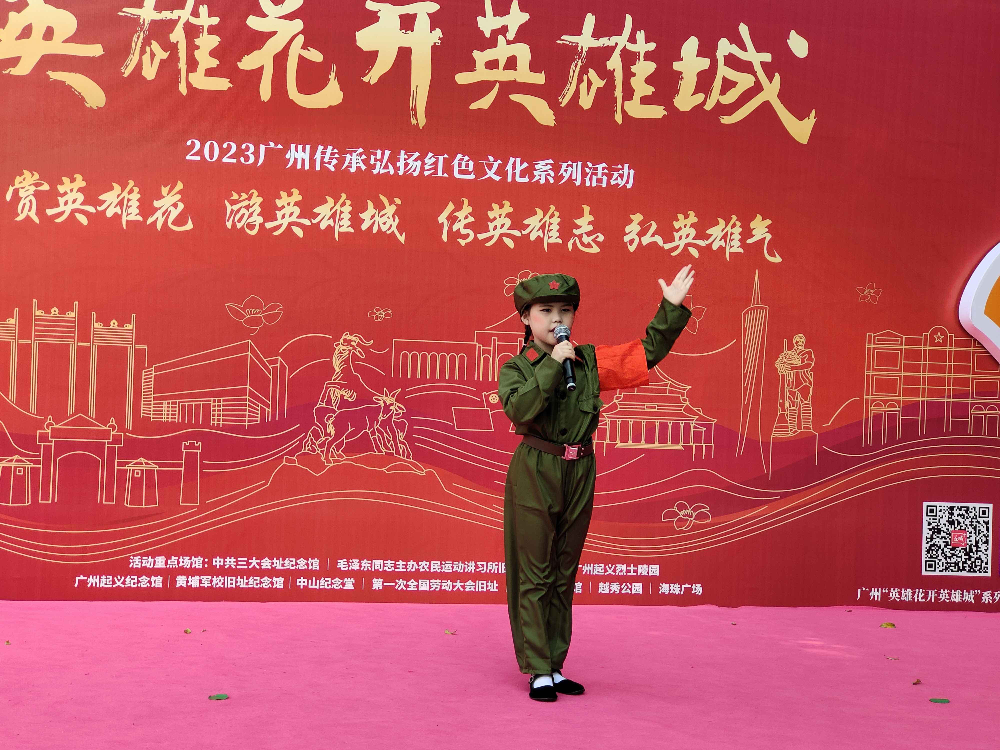
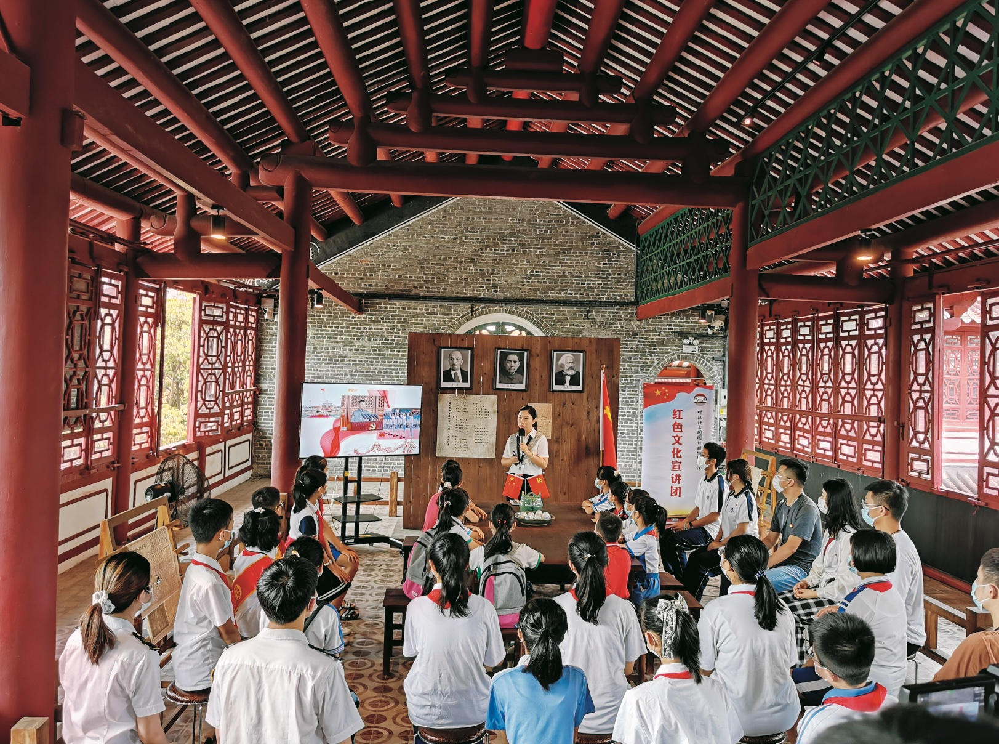
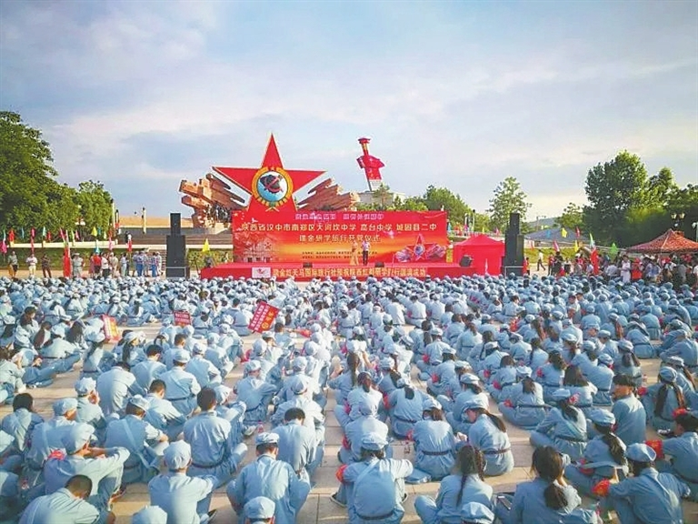
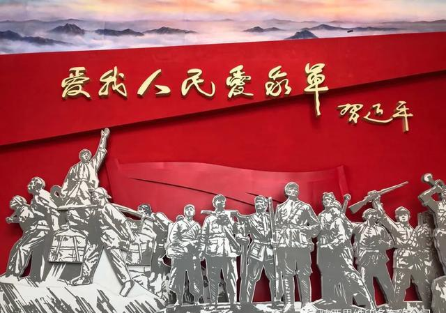
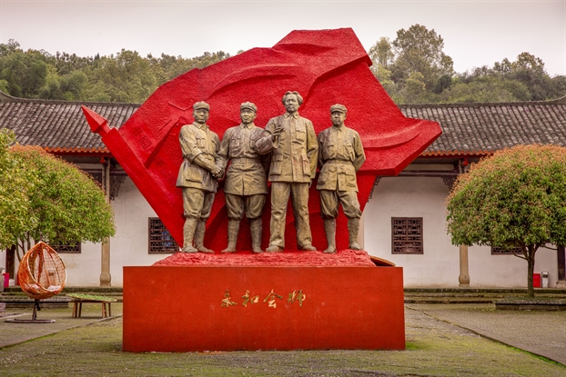

一是坚持内容创新，讲好中国红色故事。内容创新、形式创新、手段创新都重要，但内容创新是根本。只有站在受众视角构建故事体系，才能从源头上创造优质内容。中国红色故事融合了中华民族优秀的文化基因，蕴含着“以人民为中心”的使命与担当，是解读当代中国的重要密码。挖掘各种红色故事，以事服人、以形动人、以情感人，在潜移默化中让更多人认识中国共产党和中国特色社会主义。在故事的选择和表述上要坚持实事求是的原则，用“好的方式”讲好中国红色故事，用真诚的笔触向世界展现一个真实的中国。二是坚持表达创新，探索多元符号表达意义。中国红色故事内涵的丰富性决定了其表达符号的多元化。语言符号、图像符号以及运用技术手段的多样化符号叠加呈现，突破了传统表达方式，通过新的增长点给受众带来新的触动和更广阔的审美空间，技术赋能下的场景化体验更为用户营造了沉浸感。运用多元符号表达的融媒体作品往往兼具新闻片的时效性、纪录片的真实性和文艺片的故事性，通过生动形象的艺术表达展现中国红色故事的思想内涵和时代价值。 三是坚持传播创新，用主流价值导向驾驭“算法”。媒体智能化发展阶段，要充分发挥人工智能优势，要“推动关键核心技术自主创新不断实现突破，探索将人工智能运用在新闻采集、生产、分发、接收、反馈中，用主流价值导向驾驭‘算法’，全面提高舆论引导能力”。融媒体时代，要进一步优化算法推荐功能，新型主流媒体通过更加专业化、多元化的信息生产与内容分发方式，根据目标受众的认知体系和行为习惯因人施策、因时制宜，打破信息茧房，通过“建圈”实现“破圈”，将主流意识形态通过个性化推荐的方式传递至不同社会群体内部，正确引导舆论走势。